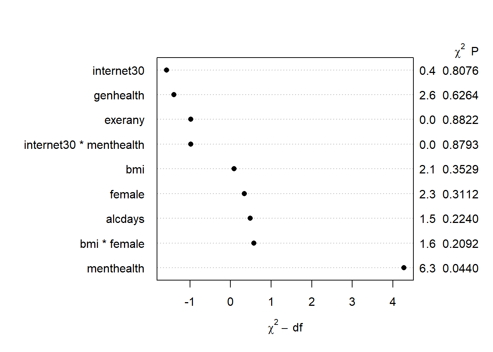
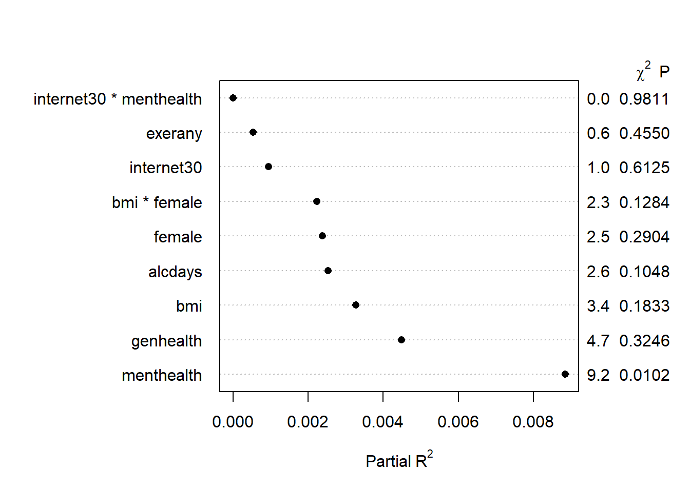
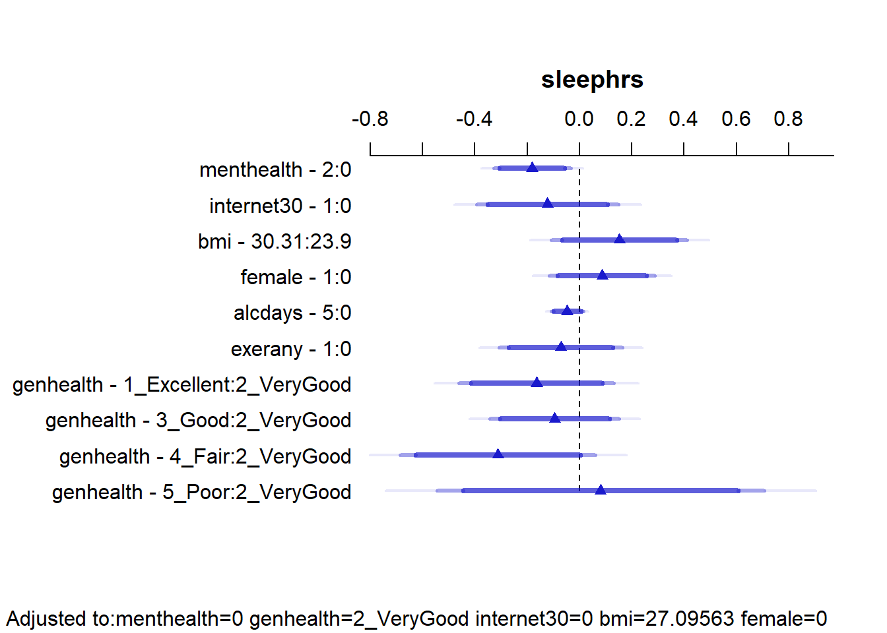
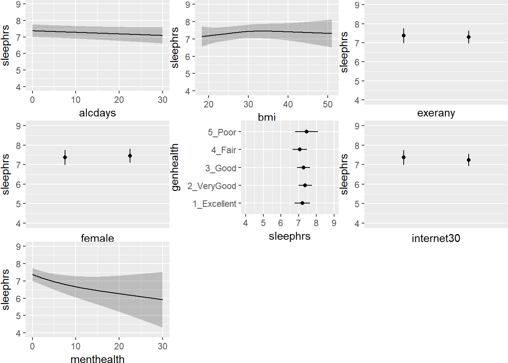
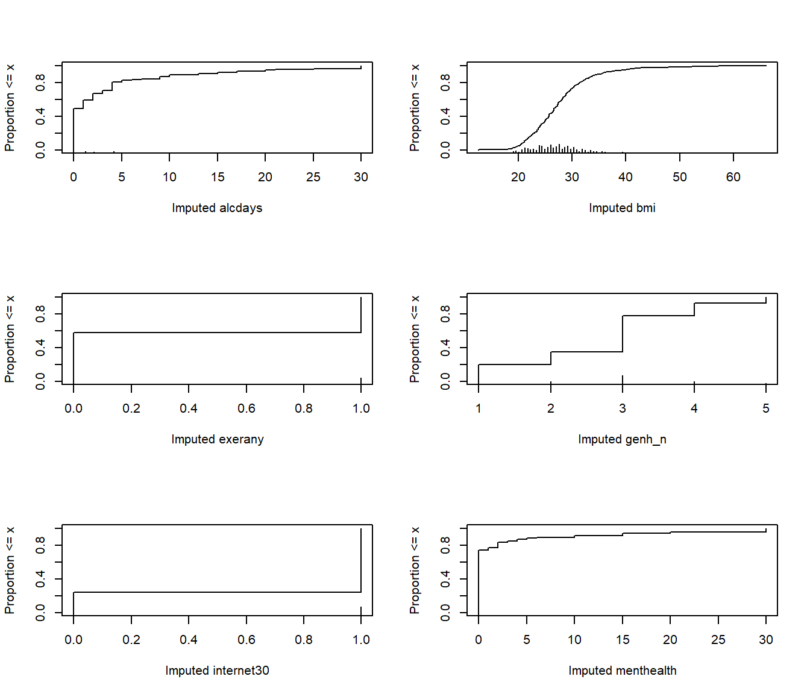

Chapter 15 Linear Regression and the smartcle1 data
15.1 The smartcle1 data
Recall that the smartcle1.csv data file available on the Data and Code page of our website describes information on 11 variables for 1036 respondents to the BRFSS 2016, who live in the Cleveland-Elyria, OH, Metropolitan Statistical Area. As we’ve discussed in previous work, the variables in the smartcle1.csv file are listed below, along with (in some cases) the BRFSS items that generate these responses.
| Variable | Description |
|---|---|
SEQNO |
respondent identification number (all begin with 2016) |
physhealth |
Now thinking about your physical health, which includes physical illness and injury, for how many days during the past 30 days was your physical health not good? |
menthealth |
Now thinking about your mental health, which includes stress, depression, and problems with emotions, for how many days during the past 30 days was your mental health not good? |
poorhealth |
During the past 30 days, for about how many days did poor physical or mental health keep you from doing your usual activities, such as self-care, work, or recreation? |
genhealth |
Would you say that in general, your health is … (five categories: Excellent, Very Good, Good, Fair or Poor) |
bmi |
Body mass index, in kg/m2 |
female |
Sex, 1 = female, 0 = male |
internet30 |
Have you used the internet in the past 30 days? (1 = yes, 0 = no) |
exerany |
During the past month, other than your regular job, did you participate in any physical activities or exercises such as running, calisthenics, golf, gardening, or walking for exercise? (1 = yes, 0 = no) |
sleephrs |
On average, how many hours of sleep do you get in a 24-hour period? |
alcdays |
How many days during the past 30 days did you have at least one drink of any alcoholic beverage such as beer, wine, a malt beverage or liquor? |
In this section, we’ll use some of the variables described above to predict the quantitative outcome: sleephrs.
15.2 Thinking About Non-Linear Terms
We have enough observations here to consider some non-linearity for our model.
In addition, since the genhealth variable is an ordinal variable and multi-categorical, we should consider how to model it. We have three options:
- include it as a factor in the model (the default approach)
- build a numeric version of that variable, and then restrict our model to treat that numeric variable as ordinal (forcing the categories to affect the
exeranyprobabilities in an ordinal way), rather than as a simple nominal factor (so that if the effect of fair vs. good was to decrease the probability of ‘exerany’, then the effect of poor vs. good would have to decrease the probability at least as much as fair vs. good did.) Treating thegenhealthvariable as ordinal could be accomplished with thescoredfunction in thermspackage. - build a numeric version of
genhealthand then use thecatgfunction to specify the predictor as nominal and categorical, but this will lead to essentially the same model as choice 1.
Suppose we’ve decided to treat the genhealth data as categorical, without restricting the effect of its various levels to be ordinal. Suppose also that we’ve decided to include the following eight variables in our model for sleephrs:
genhealthmenthealthbmifemaleinternet30exeranyalcdays
Suppose we have a subject matter understanding that:
- the impact of
bmionsleephrsis affected byfemale, so we plan afemalexbmiinteraction term - we’re using
internet30as a proxy for poverty, and we think that an interaction withmenthealthwill be helpful in our model as well.
Note that we do have some missing values in some of these predictors and in our outcome, so we’ll have to deal with that soon.
smartcle1 %>% select(sleephrs, alcdays, bmi, exerany, female, genhealth, internet30, menthealth) %>%
skim()Skim summary statistics
n obs: 1036
n variables: 8
Variable type: factor
variable missing complete n n_unique
genhealth 3 1033 1036 5
top_counts ordered
2_V: 350, 3_G: 344, 1_E: 173, 4_F: 122 FALSE
Variable type: integer
variable missing complete n mean sd p0 p25 median p75 p100
alcdays 46 990 1036 4.65 8.05 0 0 1 4 30
exerany 3 1033 1036 0.76 0.43 0 1 1 1 1
female 0 1036 1036 0.6 0.49 0 0 1 1 1
internet30 6 1030 1036 0.81 0.39 0 1 1 1 1
menthealth 11 1025 1036 2.72 6.82 0 0 0 2 30
sleephrs 8 1028 1036 7.02 1.53 1 6 7 8 20
Variable type: numeric
variable missing complete n mean sd p0 p25 median p75 p100
bmi 84 952 1036 27.89 6.47 12.71 23.7 26.68 30.53 66.0615.3 A First Model for sleephrs (Complete Case Analysis)
Suppose we develop a main-effects kitchen sink model (model mod.A below) fitted to these predictors without the benefit of any non-linear terms except the two pre-planned interactions. We’ll run the model quickly here to ensure that the code runs, in a complete case analysis, without drawing any conclusions, really.
mod.A <- ols(sleephrs ~ alcdays + bmi*female + exerany +
genhealth + internet30*menthealth,
data = smartcle1)
mod.AFrequencies of Missing Values Due to Each Variable
sleephrs alcdays bmi female exerany genhealth
8 46 84 0 3 3
internet30 menthealth
6 11
Linear Regression Model
ols(formula = sleephrs ~ alcdays + bmi * female + exerany + genhealth +
internet30 * menthealth, data = smartcle1)
Model Likelihood Discrimination
Ratio Test Indexes
Obs 903 LR chi2 16.80 R2 0.018
sigma1.4784 d.f. 12 R2 adj 0.005
d.f. 890 Pr(> chi2) 0.1571 g 0.209
Residuals
Min 1Q Median 3Q Max
-6.10511 -0.96284 -0.02392 0.89816 13.66445
Coef S.E. t Pr(>|t|)
Intercept 6.8562 0.4336 15.81 <0.0001
alcdays -0.0077 0.0063 -1.22 0.2240
bmi 0.0075 0.0135 0.56 0.5784
female 0.6701 0.4729 1.42 0.1569
exerany -0.0185 0.1250 -0.15 0.8822
genhealth=2_VeryGood 0.1267 0.1474 0.86 0.3903
genhealth=3_Good 0.0930 0.1530 0.61 0.5433
genhealth=4_Fair -0.1099 0.2019 -0.54 0.5864
genhealth=5_Poor -0.1118 0.2828 -0.40 0.6927
internet30 -0.0768 0.1434 -0.54 0.5926
menthealth -0.0171 0.0161 -1.06 0.2902
bmi * female -0.0207 0.0165 -1.26 0.2092
internet30 * menthealth -0.0027 0.0179 -0.15 0.8793
plot(anova(mod.A))
15.4 Building a Larger Model: Spearman \(\rho^2\) Plot
Before we impute, we might also consider the use of a Spearman \(\rho^2\) plot to decide how best to spend degrees of freedom on non-linear terms in our model for sleephrs using these predictors. Since we’re already planning some interaction terms, I’ll keep them in mind as I look at this plot.
sp_smart2 <- spearman2(sleephrs ~ genhealth + exerany +
female + internet30 + menthealth +
bmi + alcdays, data = smartcle1)
plot(sp_smart2)We see that the best candidate for a non-linear term is the menthealth variable, according to this plot, followed by the genhealth and bmi predictors. I will wind up fitting a model including the following non-linear terms…
- our pre-planned
femalexbmiandinternet30xmenthealthinteraction terms, - a restricted cubic spline with 5 knots for
menthealth - an interaction between
genhealthand the linear part ofmenthealth - a restricted cubic spline with 4 knots for
bmi(so the interaction term withfemalewill need to account for this and restrict our interaction to the linear piece ofbmi)
15.5 A Second Model for sleephrs (Complete Cases)
Here’s the resulting model fit without worrying about imputation yet. This is just to make sure our code works. Note that I’m inserting the main effects of our interaction terms explicitly before including the interaction terms themselves, and that I need to use %ia% to include the interaction terms where one of the terms is included in the model with a spline. Again, I won’t draw any serious conclusions yet.
mod.B <- ols(sleephrs ~ rcs(menthealth, 5) + genhealth +
genhealth %ia% menthealth + rcs(bmi, 4) +
female + female %ia% bmi + internet30 +
internet30 %ia% menthealth + alcdays +
exerany, data = smartcle1)
mod.BFrequencies of Missing Values Due to Each Variable
sleephrs menthealth genhealth bmi female internet30
8 11 3 84 0 6
alcdays exerany
46 3
Linear Regression Model
ols(formula = sleephrs ~ rcs(menthealth, 5) + genhealth + genhealth %ia%
menthealth + rcs(bmi, 4) + female + female %ia% bmi + internet30 +
internet30 %ia% menthealth + alcdays + exerany, data = smartcle1)
Model Likelihood Discrimination
Ratio Test Indexes
Obs 903 LR chi2 27.03 R2 0.029
sigma1.4759 d.f. 19 R2 adj 0.009
d.f. 883 Pr(> chi2) 0.1040 g 0.258
Residuals
Min 1Q Median 3Q Max
-6.11835 -0.93539 -0.02598 0.87085 13.68653
Coef S.E. t Pr(>|t|)
Intercept 5.9217 1.0518 5.63 <0.0001
menthealth -0.0759 0.0424 -1.79 0.0736
menthealth' 0.5218 0.3285 1.59 0.1126
genhealth=2_VeryGood 0.1716 0.1554 1.10 0.2699
genhealth=3_Good 0.0630 0.1624 0.39 0.6982
genhealth=4_Fair -0.0269 0.2216 -0.12 0.9035
genhealth=5_Poor -0.1593 0.3468 -0.46 0.6461
genhealth=2_VeryGood * menthealth -0.0382 0.0287 -1.33 0.1836
genhealth=3_Good * menthealth 0.0157 0.0227 0.69 0.4893
genhealth=4_Fair * menthealth -0.0112 0.0239 -0.47 0.6415
genhealth=5_Poor * menthealth 0.0109 0.0286 0.38 0.7044
bmi 0.0469 0.0449 1.05 0.2962
bmi' -0.1237 0.2050 -0.60 0.5463
bmi'' 0.2755 0.5607 0.49 0.6233
female 0.7588 0.4796 1.58 0.1140
female * bmi -0.0228 0.0166 -1.37 0.1707
internet30 -0.0765 0.1443 -0.53 0.5962
internet30 * menthealth 0.0023 0.0184 0.12 0.9006
alcdays -0.0069 0.0063 -1.10 0.2726
exerany 0.0080 0.1254 0.06 0.9488
plot(anova(mod.B))
It looks like menthealth may be the only significant term.
15.6 Dealing with Missing Data via Simple Imputation
One approach we might take in this problem is to use simple imputation to deal with our missing values. I will proceed as follows:
- Omit all cases where the outcome
sleephrsis missing. - Determine (and plot) the remaining missingness.
- Use simple imputation for all predictors, and build a new data set with “complete” data.
- Re-fit the proposed models using this new data set.
15.6.1 Omit cases where the outcome is missing
We need to drop the cases where sleephrs is missing in smartcle1. We’ll begin creating an imputed data set, called smartcle2_imp0, by filtering on complete data for sleephrs, as follows. Note that the describe function in Hmisc specifies the number of non-missing observations in n.
Hmisc::describe(smartcle1$sleephrs)smartcle1$sleephrs
n missing distinct Info Mean Gmd .05 .10
1028 8 14 0.935 7.018 1.505 5 5
.25 .50 .75 .90 .95
6 7 8 8 9
Value 1 2 3 4 5 6 7 8 9 10
Frequency 5 1 9 25 72 221 318 301 42 24
Proportion 0.005 0.001 0.009 0.024 0.070 0.215 0.309 0.293 0.041 0.023
Value 11 12 16 20
Frequency 2 4 2 2
Proportion 0.002 0.004 0.002 0.002smartcle2_imp0 <- smartcle1 %>%
filter(complete.cases(sleephrs)) %>%
select(SEQNO, sleephrs, alcdays, bmi, exerany, female,
genhealth, internet30, menthealth)
Hmisc::describe(smartcle2_imp0$sleephrs)smartcle2_imp0$sleephrs
n missing distinct Info Mean Gmd .05 .10
1028 0 14 0.935 7.018 1.505 5 5
.25 .50 .75 .90 .95
6 7 8 8 9
Value 1 2 3 4 5 6 7 8 9 10
Frequency 5 1 9 25 72 221 318 301 42 24
Proportion 0.005 0.001 0.009 0.024 0.070 0.215 0.309 0.293 0.041 0.023
Value 11 12 16 20
Frequency 2 4 2 2
Proportion 0.002 0.004 0.002 0.00215.6.2 Plot the remaining missingness
We’ll look at the missing values (excluding the subject ID: SEQNO) in our new data set. Of course, we can get a count of missing values within each variable with skim or with:
colSums(is.na(smartcle2_imp0)) SEQNO sleephrs alcdays bmi exerany female
0 0 45 82 2 0
genhealth internet30 menthealth
2 6 11 The Hmisc package has a plotting approach which can help identify missingness, too.
naplot(naclus(select(smartcle2_imp0, -SEQNO)))
We can also get a useful accounting of missing data patterns, with the md.pattern function in the mice package.
mice::md.pattern(smartcle2_imp0) SEQNO sleephrs female exerany genhealth internet30 menthealth alcdays
903 1 1 1 1 1 1 1 1
29 1 1 1 1 1 1 1 0
67 1 1 1 1 1 1 1 1
2 1 1 1 0 1 1 1 1
1 1 1 1 1 1 0 1 1
9 1 1 1 1 1 1 0 1
10 1 1 1 1 1 1 1 0
1 1 1 1 1 0 1 0 1
5 1 1 1 1 1 0 1 0
1 1 1 1 1 0 1 0 0
0 0 0 2 2 6 11 45
bmi
903 1 0
29 1 1
67 0 1
2 1 1
1 1 1
9 1 1
10 0 2
1 1 2
5 0 3
1 1 3
82 148We can also do this with na.pattern in the Hmisc package, but then we have to get the names of the columns, too, so that we can read off the values.
na.pattern(smartcle2_imp0)pattern
000000000 000000001 000000010 000000101 000010000 000100000 001000000
903 9 1 1 2 67 29
001000101 001100000 001100010
1 10 5 names(smartcle2_imp0)[1] "SEQNO" "sleephrs" "alcdays" "bmi" "exerany"
[6] "female" "genhealth" "internet30" "menthealth"15.6.3 Use simple imputation, build a new data set
The only variables that require no imputation are sleephrs and female. In this case, we need to impute:
- 82
bmivalues (which are quantitative) - 45
alcdaysvalues (quantitative, must fall between 0 and 30) - 11
menthealthvalues (quantitative, must fall between 0 and 30) - 6
internet30values (which are 1/0) - 2
exeranyvalues (which are also 1/0) - and 2
genhealthvalues (which are multi-categorical, so we need to convert them to numbers in order to get the imputation process to work properly)
smartcle2_imp0 <- smartcle2_imp0 %>%
mutate(genh_n = as.numeric(genhealth))
smartcle2_imp0 %>% count(genhealth, genh_n)# A tibble: 6 x 3
genhealth genh_n n
<fct> <dbl> <int>
1 1_Excellent 1. 172
2 2_VeryGood 2. 349
3 3_Good 3. 341
4 4_Fair 4. 120
5 5_Poor 5. 44
6 <NA> NA 2I’ll work from the bottom up, using various simputation functions to accomplish the imputations I want. In this case, I’ll use predictive mean matching for the categorical data, and linear models or elastic net approaches for the quantitative data. Be sure to set a seed beforehand so you can replicate your work.
set.seed(432109)
smartcle2_imp1 <- smartcle2_imp0 %>%
impute_pmm(genh_n ~ female) %>%
impute_pmm(exerany + internet30 ~ female + genh_n) %>%
impute_lm(menthealth ~ female + genh_n + exerany) %>%
impute_en(alcdays ~ female + genh_n + menthealth) %>%
impute_en(bmi ~ alcdays + exerany + genh_n)After the imputations are complete, I’ll back out of the numeric version of genhealth, called genh_n back to my original variable, then check to be sure I now have no missing values.
smartcle2_imp1 <- smartcle2_imp1 %>%
mutate(genhealth = fct_recode(factor(genh_n),
"1_Excellent" = "1",
"2_VeryGood" = "2",
"3_Good" = "3",
"4_Fair" = "4",
"5_Poor" = "5"))
smartcle2_imp1 %>% count(genhealth, genh_n)# A tibble: 5 x 3
genhealth genh_n n
<fct> <dbl> <int>
1 1_Excellent 1. 172
2 2_VeryGood 2. 350
3 3_Good 3. 342
4 4_Fair 4. 120
5 5_Poor 5. 44colSums(is.na(smartcle2_imp1)) SEQNO sleephrs alcdays bmi exerany female
0 0 0 0 0 0
genhealth internet30 menthealth genh_n
0 0 0 0 OK. Looks good. I now have a data frame called smartcle2_imp1 with no missingness, which I can use to fit my logistic regression models. Let’s do that next, and then return to the problem of accounting for missingness through multiple imputation.
15.7 Refitting Model A with simply imputed data
Using the numeric version of the genhealth data, called genh_n, will ease the reviewing of later output, so we’ll do that here, making sure R knows that genh_n describes a categorical factor.
d <- datadist(smartcle2_imp1)
options(datadist = "d")
mod.A2 <- ols(sleephrs ~ alcdays + bmi*female + exerany +
genhealth + internet30*menthealth,
data = smartcle2_imp1, x = TRUE, y = TRUE)
mod.A2Linear Regression Model
ols(formula = sleephrs ~ alcdays + bmi * female + exerany + genhealth +
internet30 * menthealth, data = smartcle2_imp1, x = TRUE,
y = TRUE)
Model Likelihood Discrimination
Ratio Test Indexes
Obs 1028 LR chi2 24.61 R2 0.024
sigma1.5193 d.f. 12 R2 adj 0.012
d.f. 1015 Pr(> chi2) 0.0168 g 0.245
Residuals
Min 1Q Median 3Q Max
-6.15720 -0.95552 -0.03011 0.86804 13.80609
Coef S.E. t Pr(>|t|)
Intercept 6.9916 0.4305 16.24 <0.0001
alcdays -0.0101 0.0062 -1.62 0.1048
bmi 0.0080 0.0135 0.59 0.5558
female 0.7360 0.4682 1.57 0.1162
exerany -0.0898 0.1201 -0.75 0.4550
genhealth=2_VeryGood 0.1248 0.1430 0.87 0.3832
genhealth=3_Good 0.0912 0.1483 0.62 0.5386
genhealth=4_Fair -0.2083 0.1945 -1.07 0.2844
genhealth=5_Poor 0.1361 0.2722 0.50 0.6173
internet30 -0.1282 0.1374 -0.93 0.3510
menthealth -0.0228 0.0164 -1.39 0.1635
bmi * female -0.0248 0.0163 -1.52 0.1284
internet30 * menthealth 0.0004 0.0180 0.02 0.9811
All right. We’ve used 1028 observations, which is correct (after deleting the eight with missing sleephrs. The model shows a lousy R2 value of 0.024 after imputation.
15.7.1 Validating Summary Statistics
set.seed(432487)
validate(mod.A2) index.orig training test optimism index.corrected n
R-square 0.0237 0.0402 0.0067 0.0335 -0.0099 40
MSE 2.2791 2.2812 2.3186 -0.0374 2.3165 40
g 0.2453 0.3112 0.1902 0.1210 0.1243 40
Intercept 0.0000 0.0000 2.5979 -2.5979 2.5979 40
Slope 1.0000 1.0000 0.6302 0.3698 0.6302 40As poor as the nominal R2 value is, it appears that the model’s description of summary statistics is still optimistic. After validation, we cannot claim any meaningful predictive value at all, with a negative (impossible) R2 value. This output suggests that in a new sample of data, our model shouldn’t be expected to do anything useful at all.
15.7.2 ANOVA for the model
Next, let’s look at the ANOVA comparisons for this (admittedly terrible) prediction model.
anova(mod.A2) Analysis of Variance Response: sleephrs
Factor d.f. Partial SS
alcdays 1 6.083831e+00
bmi (Factor+Higher Order Factors) 2 7.844991e+00
All Interactions 1 5.345522e+00
female (Factor+Higher Order Factors) 2 5.715093e+00
All Interactions 1 5.345522e+00
exerany 1 1.289411e+00
genhealth 4 1.075881e+01
internet30 (Factor+Higher Order Factors) 2 2.264350e+00
All Interactions 1 1.301337e-03
menthealth (Factor+Higher Order Factors) 2 2.124566e+01
All Interactions 1 1.301337e-03
bmi * female (Factor+Higher Order Factors) 1 5.345522e+00
internet30 * menthealth (Factor+Higher Order Factors) 1 1.301337e-03
TOTAL INTERACTION 2 5.350214e+00
REGRESSION 12 5.676073e+01
ERROR 1015 2.342924e+03
MS F P
6.083830768 2.64 0.1048
3.922495636 1.70 0.1833
5.345521775 2.32 0.1284
2.857546649 1.24 0.2904
5.345521775 2.32 0.1284
1.289411070 0.56 0.4550
2.689702722 1.17 0.3246
1.132174866 0.49 0.6125
0.001301337 0.00 0.9811
10.622828725 4.60 0.0102
0.001301337 0.00 0.9811
5.345521775 2.32 0.1284
0.001301337 0.00 0.9811
2.675106916 1.16 0.3142
4.730061148 2.05 0.0178
2.308299597 plot(anova(mod.A2))Only menthealth appears to carry statistically significant predictive value here.
We can also build a plot of the AIC values attributable to each piece of the model.
plot(anova(mod.A2), what="aic")We can also plot the Partial R2 values for each predictor. The partial R2 for internet30, for instance, is the R2 value that you would obtain if you first regress internet30 on every other predictor in the model, take the residuals, and then regress those on internet30. It simply tells you, then, how much of the tiny amount of variation explained by the model as a whole is accounted for by each predictor after all of the other ones have already been accounted for. The partial R2 values, therefore, do not sum up to the total R2 explained by the model. In our case, the menthealth variable is again far and away the most “useful” variable.
plot(anova(mod.A2), what="partial")
15.7.3 Summarizing Effect Size
How big are the effects we see?
plot(summary(mod.A2))summary(mod.A2) Effects Response : sleephrs
Factor Low High Diff. Effect S.E.
alcdays 0.0 5.00 5.00 -0.050632 0.031188
bmi 23.9 30.31 6.41 0.051110 0.086734
female 0.0 1.00 1.00 0.063083 0.101450
exerany 0.0 1.00 1.00 -0.089786 0.120130
internet30 0.0 1.00 1.00 -0.128250 0.137430
menthealth 0.0 2.00 2.00 -0.045668 0.032753
genhealth - 1_Excellent:2_VeryGood 2.0 1.00 NA -0.124770 0.143030
genhealth - 3_Good:2_VeryGood 2.0 3.00 NA -0.033557 0.118930
genhealth - 4_Fair:2_VeryGood 2.0 4.00 NA -0.333090 0.172000
genhealth - 5_Poor:2_VeryGood 2.0 5.00 NA 0.011282 0.258040
Lower 0.95 Upper 0.95
-0.11183 0.0105680
-0.11909 0.2213100
-0.13600 0.2621600
-0.32552 0.1459500
-0.39792 0.1414300
-0.10994 0.0186030
-0.40544 0.1558900
-0.26694 0.1998200
-0.67059 0.0044216
-0.49508 0.5176400
Adjusted to: bmi=27.09563 female=0 internet30=0 menthealth=0 This output is easier to read as a result of using small numeric labels in genh_n, rather than the lengthy labels in genhealth. Interpret the results as differences in our outcome sleephrs associated with the expressed changes in predictors, holding the others constant.
- holding all other predictors constant, the effect of moving from
alcdays= 0 toalcdays= 5 is -0.05 hours of sleep.- We also have a 95% confidence interval for this estimate, which is (-0.11, 0.01). Since 0 is in that interval, we cannot conclude that the effect of
alcdaysonsleephrsis either definitely positive or definitely negative.
- We also have a 95% confidence interval for this estimate, which is (-0.11, 0.01). Since 0 is in that interval, we cannot conclude that the effect of
- A similar approach can be used to describe the effects on
sleephrsassociated with each predictor. - Note that each of the categories in
genh_nis compared to a single baseline category. Here, that’s category 2. R will pick the modal category: the one that appears most often in the data. The comparisons of each category against category 2 are not significant in each case, at the 5% level.
15.7.4 Plotting the Model with ggplot and Predict
Let’s look at a series of plots describing the model for sleephrs.
ggplot(Predict(mod.A2))This helps us describe what is happening in terms of direction at least. For example,
- As
menthealthincreases, predictedsleephrsactually decreases. - In general, though, the impact of these predictors on
sleephrsappears minimal.
15.7.5 Plotting the model with a nomogram
plot(nomogram(mod.A2))Note the impact of our interaction terms, and how we have two lines for bmi and two lines for menthealth that ` that come out of our product terms. As with any nomogram, to make a prediction we:
- find the values of each of our predictors in the scales, and travel vertically up to the Points line to read off the Points for that predictor.
- sum up the Points across all predictors, and find that location in the Total Points line.
- move vertically down from the total points line to find the estimated “linear predictor” (
sleephrs)
15.7.6 Residual Plots for mod.A2
We can obtain our usual residual plots for a linear model. Or, we can obtain things like the residuals and fitted values directly, to produce a plot. For example,
plot(mod.A2$residuals ~ mod.A2$fitted.values)Or we can get the same residuals vs. fitted values plot with:
plot(mod.A2, "ordinary", which = 1)15.8 Refitting Model B with simply imputed data
I’ll walk through the same tasks for Model m2 that I did above for Model m1. Again, we’re running this model after simple imputation of missing values.
Using the numeric version of the genhealth data, called genh_n, will ease the reviewing of later output, so we’ll do that here, making sure R knows that genh_n describes a categorical factor.
d <- datadist(smartcle2_imp1)
options(datadist = "d")
mod.B2 <- ols(sleephrs ~ rcs(menthealth, 5) + genhealth +
genhealth %ia% menthealth + internet30 +
internet30 %ia% menthealth + rcs(bmi, 4) +
female + female %ia% bmi + alcdays +
exerany,
data = smartcle2_imp1, x = TRUE, y = TRUE)
mod.B2Linear Regression Model
ols(formula = sleephrs ~ rcs(menthealth, 5) + genhealth + genhealth %ia%
menthealth + internet30 + internet30 %ia% menthealth + rcs(bmi,
4) + female + female %ia% bmi + alcdays + exerany, data = smartcle2_imp1,
x = TRUE, y = TRUE)
Model Likelihood Discrimination
Ratio Test Indexes
Obs 1028 LR chi2 31.84 R2 0.031
sigma1.5192 d.f. 19 R2 adj 0.012
d.f. 1008 Pr(> chi2) 0.0325 g 0.274
Residuals
Min 1Q Median 3Q Max
-6.12337 -0.95462 -0.03322 0.86403 13.69249
Coef S.E. t Pr(>|t|)
Intercept 6.5183 1.0161 6.41 <0.0001
menthealth -0.0605 0.0412 -1.47 0.1417
menthealth' 0.3943 0.3175 1.24 0.2146
genhealth=2_VeryGood 0.1637 0.1513 1.08 0.2793
genhealth=3_Good 0.0691 0.1580 0.44 0.6618
genhealth=4_Fair -0.1475 0.2140 -0.69 0.4908
genhealth=5_Poor 0.2443 0.3336 0.73 0.4641
genhealth=2_VeryGood * menthealth -0.0333 0.0270 -1.23 0.2177
genhealth=3_Good * menthealth 0.0065 0.0217 0.30 0.7636
genhealth=4_Fair * menthealth -0.0113 0.0233 -0.48 0.6292
genhealth=5_Poor * menthealth -0.0137 0.0275 -0.50 0.6190
internet30 -0.1221 0.1386 -0.88 0.3788
internet30 * menthealth 0.0034 0.0185 0.18 0.8544
bmi 0.0253 0.0430 0.59 0.5563
bmi' 0.0129 0.1925 0.07 0.9467
bmi'' -0.1314 0.5808 -0.23 0.8210
female 0.7775 0.4746 1.64 0.1017
female * bmi -0.0255 0.0165 -1.54 0.1228
alcdays -0.0094 0.0063 -1.50 0.1334
exerany -0.0713 0.1206 -0.59 0.5545
The model still uses 1028 observations, and shows an R2 value of 0.031, marginally better than what we saw in mod.A2. The likelihood ratio (drop in deviance) test is still highly significant.
15.8.1 Validating Summary Statistics
set.seed(432989)
validate(mod.B2) index.orig training test optimism index.corrected n
R-square 0.0305 0.0616 -0.0006 0.0622 -0.0317 40
MSE 2.2631 2.1637 2.3358 -0.1721 2.4352 40
g 0.2738 0.3691 0.1919 0.1772 0.0966 40
Intercept 0.0000 0.0000 3.3422 -3.3422 3.3422 40
Slope 1.0000 1.0000 0.5243 0.4757 0.5243 40Again, the model’s description of summary statistics is optimistic and we have no reason to expect the model is of any predictive value at all.
15.8.2 ANOVA for the model
Next, let’s look at the ANOVA comparisons for this model.
anova(mod.B2) Analysis of Variance Response: sleephrs
Factor d.f. Partial SS
menthealth (Factor+Higher Order Factors) 7 3.270460e+01
All Interactions 5 7.342058e+00
Nonlinear 1 3.559092e+00
genhealth (Factor+Higher Order Factors) 8 1.680021e+01
All Interactions 4 7.340686e+00
genhealth * menthealth (Factor+Higher Order Factors) 4 7.340686e+00
internet30 (Factor+Higher Order Factors) 2 1.844060e+00
All Interactions 1 7.778417e-02
internet30 * menthealth (Factor+Higher Order Factors) 1 7.778417e-02
bmi (Factor+Higher Order Factors) 4 1.210885e+01
All Interactions 1 5.505060e+00
Nonlinear 2 4.530786e+00
female (Factor+Higher Order Factors) 2 6.352010e+00
All Interactions 1 5.505060e+00
female * bmi (Factor+Higher Order Factors) 1 5.505060e+00
alcdays 1 5.207146e+00
exerany 1 8.067239e-01
TOTAL NONLINEAR 3 8.358126e+00
TOTAL INTERACTION 6 1.310220e+01
TOTAL NONLINEAR + INTERACTION 9 2.178490e+01
REGRESSION 19 7.319542e+01
ERROR 1008 2.326489e+03
MS F P
4.67208631 2.02 0.0493
1.46841162 0.64 0.6721
3.55909180 1.54 0.2146
2.10002607 0.91 0.5073
1.83517159 0.80 0.5284
1.83517159 0.80 0.5284
0.92203018 0.40 0.6708
0.07778417 0.03 0.8544
0.07778417 0.03 0.8544
3.02721254 1.31 0.2637
5.50505988 2.39 0.1228
2.26539276 0.98 0.3751
3.17600485 1.38 0.2530
5.50505988 2.39 0.1228
5.50505988 2.39 0.1228
5.20714639 2.26 0.1334
0.80672393 0.35 0.5545
2.78604205 1.21 0.3059
2.18370069 0.95 0.4609
2.42054479 1.05 0.3988
3.85239069 1.67 0.0357
2.30802520 plot(anova(mod.B2))Again, only menthealth (and that just barely) is carrying statistically significant predictive value.
Here is the AIC plot.
plot(anova(mod.B2), what="aic")
15.8.3 Summarizing Effect Size
How big are the effects we see?
summary(mod.B2) Effects Response : sleephrs
Factor Low High Diff. Effect S.E.
menthealth 0.0 2.00 2.00 -0.180800 0.075371
internet30 0.0 1.00 1.00 -0.122060 0.138610
bmi 23.9 30.31 6.41 0.152360 0.132460
female 0.0 1.00 1.00 0.086907 0.102950
alcdays 0.0 5.00 5.00 -0.047077 0.031342
exerany 0.0 1.00 1.00 -0.071311 0.120620
genhealth - 1_Excellent:2_VeryGood 2.0 1.00 NA -0.163750 0.151290
genhealth - 3_Good:2_VeryGood 2.0 3.00 NA -0.094635 0.126260
genhealth - 4_Fair:2_VeryGood 2.0 4.00 NA -0.311280 0.190520
genhealth - 5_Poor:2_VeryGood 2.0 5.00 NA 0.080564 0.319140
Lower 0.95 Upper 0.95
-0.32870 -0.032900
-0.39406 0.149940
-0.10757 0.412290
-0.11511 0.288920
-0.10858 0.014427
-0.30800 0.165380
-0.46062 0.133120
-0.34239 0.153120
-0.68515 0.062577
-0.54569 0.706820
Adjusted to: menthealth=0 genhealth=2_VeryGood internet30=0 bmi=27.09563 female=0 plot(summary(mod.B2))
This output is easier to read as a result of using small numeric labels in genh_n, rather than the lengthy labels in genhealth. The results are, again, interpreted as differences in predicted sleephrs. For example,
- holding all other predictors constant, the effect of moving from
menthealth= 0 tomenthealth= 2 is a decline of 0.18 in predictedsleephrs, with 95% CI (-0.33, -0.03) hours.
15.8.4 Plotting the Model with ggplot and Predict
Again, consider a series of plots describing the model mod.B2.
ggplot(Predict(mod.B2))
Note the small kink in the bmi plot. To what do you attribute this?
15.9 Comparing Model B.2 to Model A.2 after simple imputation
We can refit the models with glm and then compare them with anova, aic and bic approaches, if we like.
mA2_lm <- lm(sleephrs ~ alcdays + bmi*female + exerany +
genhealth + internet30*menthealth,
data = smartcle2_imp1)
mB2_lm <- lm(sleephrs ~ rcs(menthealth, 5) + genhealth +
genhealth %ia% menthealth + internet30 +
internet30 %ia% menthealth + rcs(bmi, 4) +
female + female %ia% bmi + alcdays +
exerany,
data = smartcle2_imp1)15.9.1 Comparison by Analysis of Variance
anova(mA2_lm, mB2_lm)Analysis of Variance Table
Model 1: sleephrs ~ alcdays + bmi * female + exerany + genhealth + internet30 *
menthealth
Model 2: sleephrs ~ rcs(menthealth, 5) + genhealth + genhealth %ia% menthealth +
internet30 + internet30 %ia% menthealth + rcs(bmi, 4) + female +
female %ia% bmi + alcdays + exerany
Res.Df RSS Df Sum of Sq F Pr(>F)
1 1015 2342.9
2 1008 2326.5 7 16.435 1.0172 0.4172The additional terms in model B2 don’t seem to improve the fit significantly.
15.9.2 Comparing AIC and BIC
glance(mA2_lm) r.squared adj.r.squared sigma statistic p.value df logLik
1 0.02365341 0.0121104 1.519309 2.049154 0.01784591 13 -1882.094
AIC BIC deviance df.residual
1 3792.188 3861.283 2342.924 1015glance(mB2_lm) r.squared adj.r.squared sigma statistic p.value df logLik
1 0.0305021 0.01222783 1.519219 1.669129 0.03567068 20 -1878.476
AIC BIC deviance df.residual
1 3798.952 3902.595 2326.489 1008Model mA2_lm shows lower AIC and BIC than does mB2_lm, but as we see in the R2 values, they are both terrible models.
15.10 Dealing with Missing Data via Multiple Imputation
Next, we’ll use the aregImpute function within the Hmisc package to predict all missing values for all of our variables, using additive regression bootstrapping and predictive mean matching. The steps for this work are as follows:
aregImputedraws a sample with replacement from the observations where the target variable is observed, not missing.aregImputethen fits a flexible additive model to predict this target variable while finding the optimum transformation of it.aregImputethen uses this fitted flexible model to predict the target variable in all of the original observations.- Finally,
aregImputeimputes each missing value of the target variable with the observed value whose predicted transformed value is closest to the predicted transformed value of the missing value.
We’ll start with the smartcle2_imp0 data set, which contains only the subjects in the original smartcle1 data where sleephrs is available, and which includes only the variables of interest to us, including both the factor (genhealth) and numeric (genh_n) versions of the genhealth data.
summary(smartcle2_imp0) SEQNO sleephrs alcdays bmi
Min. :2.016e+09 Min. : 1.000 Min. : 0.000 Min. :12.71
1st Qu.:2.016e+09 1st Qu.: 6.000 1st Qu.: 0.000 1st Qu.:23.70
Median :2.016e+09 Median : 7.000 Median : 1.000 Median :26.68
Mean :2.016e+09 Mean : 7.018 Mean : 4.672 Mean :27.86
3rd Qu.:2.016e+09 3rd Qu.: 8.000 3rd Qu.: 4.000 3rd Qu.:30.53
Max. :2.016e+09 Max. :20.000 Max. :30.000 Max. :66.06
NA's :45 NA's :82
exerany female genhealth internet30
Min. :0.0000 Min. :0.0000 1_Excellent:172 Min. :0.0000
1st Qu.:1.0000 1st Qu.:0.0000 2_VeryGood :349 1st Qu.:1.0000
Median :1.0000 Median :1.0000 3_Good :341 Median :1.0000
Mean :0.7622 Mean :0.6012 4_Fair :120 Mean :0.8112
3rd Qu.:1.0000 3rd Qu.:1.0000 5_Poor : 44 3rd Qu.:1.0000
Max. :1.0000 Max. :1.0000 NA's : 2 Max. :1.0000
NA's :2 NA's :6
menthealth genh_n
Min. : 0.000 Min. :1.000
1st Qu.: 0.000 1st Qu.:2.000
Median : 0.000 Median :2.000
Mean : 2.707 Mean :2.527
3rd Qu.: 2.000 3rd Qu.:3.000
Max. :30.000 Max. :5.000
NA's :11 NA's :2 The smartcle2_imp0 data set contains 1028 rows (subjects) and 10 columns (variables.)
15.10.1 Using aregImpute to fit a multiple imputation model
To set up aregImpute here, we’ll need to specify:
- a suitable random seed with
set.seedso we can replicate our work later - a data set via the
datadiststuff shown below - the variables we want to include in the imputation process, which should include, at a minimum, any variables with missing values, and any variables we want to include in our outcome models
n.impute= number of imputations, we’ll run 20 here11nk= number of knots to describe level of complexity, with our choicenk = c(0, 3)we’ll fit both linear models and models with restricted cubic splines with 3 knots (this approach will wind up throwing some warnings here because some of our variables with missing values have only a few options so fitting splines is tough.)tlinear = FALSEallows the target variable for imputation to have a non-linear transformation whennkis 3 or more. Here, I’ll usetlinear = TRUE, the default.B = 10specifies 10 bootstrap samples will be usedpr = FALSEtells the machine not to print out which iteration is running as it goes.dataspecifies the source of the variables
set.seed(432365)
dd <- datadist(smartcle2_imp0)
options(datadist = "dd")
imp_fit <- aregImpute(~ sleephrs + alcdays + bmi + exerany +
female + genh_n + internet30 +
menthealth,
nk = c(0, 3), tlinear = TRUE,
data = smartcle2_imp0, B = 10,
n.impute = 20, pr = FALSE) OK. Here is the imputation model. The summary here isn’t especially critical. We want to see what was run, but to see what the results look like, we’ll need a plot, to come.
imp_fit
Multiple Imputation using Bootstrap and PMM
aregImpute(formula = ~sleephrs + alcdays + bmi + exerany + female +
genh_n + internet30 + menthealth, data = smartcle2_imp0,
n.impute = 20, nk = c(0, 3), tlinear = TRUE, pr = FALSE,
B = 10)
n: 1028 p: 8 Imputations: 20 nk: 0
Number of NAs:
sleephrs alcdays bmi exerany female genh_n
0 45 82 2 0 2
internet30 menthealth
6 11
type d.f.
sleephrs s 1
alcdays s 1
bmi s 1
exerany l 1
female l 1
genh_n s 1
internet30 l 1
menthealth s 1
Transformation of Target Variables Forced to be Linear
R-squares for Predicting Non-Missing Values for Each Variable
Using Last Imputations of Predictors
alcdays bmi exerany genh_n internet30 menthealth
0.071 0.094 0.166 0.212 0.151 0.083
Resampling results for determining the complexity of imputation models
Variable being imputed: alcdays
nk=0 nk=3
Bootstrap bias-corrected R^2 0.0687 0.0612
10-fold cross-validated R^2 0.0706 0.0678
Bootstrap bias-corrected mean |error| 5.3804 5.2618
10-fold cross-validated mean |error| 4.9122 4.9570
Bootstrap bias-corrected median |error| 3.7094 3.7051
10-fold cross-validated median |error| 1.6790 1.7335
Variable being imputed: bmi
nk=0 nk=3
Bootstrap bias-corrected R^2 0.0904 0.100
10-fold cross-validated R^2 0.1061 0.103
Bootstrap bias-corrected mean |error| 4.3705 4.400
10-fold cross-validated mean |error| 27.8053 27.767
Bootstrap bias-corrected median |error| 3.2927 3.409
10-fold cross-validated median |error| 26.8306 26.687
Variable being imputed: exerany
nk=0 nk=3
Bootstrap bias-corrected R^2 0.135 0.116
10-fold cross-validated R^2 0.135 0.125
Bootstrap bias-corrected mean |error| 0.317 0.317
10-fold cross-validated mean |error| 0.930 0.899
Bootstrap bias-corrected median |error| 0.248 0.231
10-fold cross-validated median |error| 0.740 0.671
Variable being imputed: genh_n
nk=0 nk=3
Bootstrap bias-corrected R^2 0.198 0.236
10-fold cross-validated R^2 0.200 0.225
Bootstrap bias-corrected mean |error| 0.744 0.731
10-fold cross-validated mean |error| 2.538 2.531
Bootstrap bias-corrected median |error| 0.646 0.650
10-fold cross-validated median |error| 2.532 2.524
Variable being imputed: internet30
nk=0 nk=3
Bootstrap bias-corrected R^2 0.101 0.125
10-fold cross-validated R^2 0.109 0.121
Bootstrap bias-corrected mean |error| 0.279 0.272
10-fold cross-validated mean |error| 0.992 0.983
Bootstrap bias-corrected median |error| 0.190 0.190
10-fold cross-validated median |error| 0.817 0.819
Variable being imputed: menthealth
nk=0 nk=3
Bootstrap bias-corrected R^2 0.0573 0.102
10-fold cross-validated R^2 0.0969 0.116
Bootstrap bias-corrected mean |error| 3.8132 3.712
10-fold cross-validated mean |error| 3.1552 3.112
Bootstrap bias-corrected median |error| 2.3749 1.979
10-fold cross-validated median |error| 0.9384 0.783OK, let’s plot these imputed values. Note that we had six predictors with missing values in our data set, and so if we plot each of those, we’ll wind up with six plots. I’ll arrange them in a grid with three rows and two columns.
par(mfrow = c(3,2))
plot(imp_fit)
par(mfrow = c(1,1))From these cumulative distribution functions, we can see that, for example,
- we imputed
bmivalues mostly between 20 and 35, with a few values below 20 or above 40. - most of our imputed
alcdayswere between 0 and 5 - we imputed 1 for
internet30for about 70% of the subjects, and 0 for the other 30%.
This predictive mean matching method never imputes a value for a variable that does not already exist in the data.
15.11 Combining the Imputation and Outcome Models
So, now we have an imputation model, called imp_fit. and two outcome models: mod.A and mod.B. What do we do with them?
15.11.1 Model A with Multiple Imputation
To build the mA_imp multiple imputation fit for model mod.A, we use the fit.mult.impute command, and specify the model, the fitter (here, lrm), the imputation model (xtrans = imp_fit) and the data set prior to imputation (smartcle2_imp0).
mA_imp <- fit.mult.impute(sleephrs ~ alcdays + bmi*female +
exerany + catg(genh_n) +
internet30*menthealth,
fitter = ols, xtrans = imp_fit,
data = smartcle2_imp0,
x = TRUE, y = TRUE)
Variance Inflation Factors Due to Imputation:
Intercept alcdays bmi
1.22 1.02 1.29
female exerany genh_n=2
1.21 1.01 1.00
genh_n=3 genh_n=4 genh_n=5
1.01 1.01 1.00
internet30 menthealth bmi * female
1.01 1.01 1.22
internet30 * menthealth
1.01
Rate of Missing Information:
Intercept alcdays bmi
0.18 0.02 0.22
female exerany genh_n=2
0.18 0.01 0.00
genh_n=3 genh_n=4 genh_n=5
0.01 0.01 0.00
internet30 menthealth bmi * female
0.01 0.01 0.18
internet30 * menthealth
0.01
d.f. for t-distribution for Tests of Single Coefficients:
Intercept alcdays bmi
593.81 56125.67 384.31
female exerany genh_n=2
618.43 204840.97 2743445.99
genh_n=3 genh_n=4 genh_n=5
197711.45 230304.96 812145.77
internet30 menthealth bmi * female
573166.43 100933.56 582.27
internet30 * menthealth
149596.38
The following fit components were averaged over the 20 model fits:
fitted.values stats linear.predictors OK. Let’s get the familiar description of an ols model, after this multiple imputation.
mA_impLinear Regression Model
fit.mult.impute(formula = sleephrs ~ alcdays + bmi * female +
exerany + catg(genh_n) + internet30 * menthealth, fitter = ols,
xtrans = imp_fit, data = smartcle2_imp0, x = TRUE, y = TRUE)
Model Likelihood Discrimination
Ratio Test Indexes
Obs 1028 LR chi2 25.38 R2 0.024
sigma1.5187 d.f. 12 R2 adj 0.013
d.f. 1015 Pr(> chi2) 0.0131 g 0.249
Residuals
Min 1Q Median 3Q Max
-6.1580 -0.9603 -0.0241 0.8660 13.8147
Coef S.E. t Pr(>|t|)
Intercept 7.0186 0.4653 15.09 <0.0001
alcdays -0.0098 0.0062 -1.59 0.1125
bmi 0.0065 0.0150 0.43 0.6642
female 0.6880 0.5007 1.37 0.1697
exerany -0.0879 0.1207 -0.73 0.4665
genh_n=2 0.1274 0.1431 0.89 0.3735
genh_n=3 0.0966 0.1487 0.65 0.5160
genh_n=4 -0.2022 0.1950 -1.04 0.3000
genh_n=5 0.1381 0.2727 0.51 0.6126
internet30 -0.1200 0.1375 -0.87 0.3829
menthealth -0.0212 0.0162 -1.31 0.1915
bmi * female -0.0231 0.0175 -1.32 0.1875
internet30 * menthealth -0.0018 0.0178 -0.10 0.9216
We can obtain an ANOVA plot and an AIC plot to look at the predictors:
par(mfrow = c(2,1))
plot(anova(mA_imp))
plot(anova(mA_imp), what="aic")par(mfrow = c(1,1))Here’s the summary of effect sizes.
summary(mA_imp) Effects Response : sleephrs
Factor Low High Diff. Effect S.E. Lower 0.95 Upper 0.95
alcdays 0.0 4.00 4.00 -0.039305 0.024745 -0.087862 0.0092510
bmi 23.7 30.53 6.83 0.044453 0.102380 -0.156450 0.2453600
female 0.0 1.00 1.00 0.072470 0.103040 -0.129720 0.2746600
exerany 0.0 1.00 1.00 -0.087925 0.120690 -0.324760 0.1489100
internet30 0.0 1.00 1.00 -0.120040 0.137520 -0.389900 0.1498100
menthealth 0.0 2.00 2.00 -0.042465 0.032493 -0.106230 0.0212970
genh_n - 1:2 2.0 1.00 NA -0.127370 0.143050 -0.408080 0.1533300
genh_n - 3:2 2.0 3.00 NA -0.030744 0.119400 -0.265030 0.2035500
genh_n - 4:2 2.0 4.00 NA -0.329540 0.172410 -0.667870 0.0087869
genh_n - 5:2 2.0 5.00 NA 0.010733 0.258480 -0.496490 0.5179500
Adjusted to: bmi=26.68 female=0 internet30=0 menthealth=0 plot(summary(mA_imp))And here is the nomogram.
plot(nomogram(mA_imp))Here are the descriptive model plots:
ggplot(Predict(mA_imp))
We can still do things like validate the summary statistics, too.
validate(mA_imp) index.orig training test optimism index.corrected n
R-square 0.0249 0.0434 0.0041 0.0394 -0.0145 40
MSE 2.2762 2.2940 2.3249 -0.0309 2.3071 40
g 0.2458 0.3247 0.1889 0.1358 0.1100 40
Intercept 0.0000 0.0000 2.8426 -2.8426 2.8426 40
Slope 1.0000 1.0000 0.5940 0.4060 0.5940 40The same approach can be used to build a mB_imp multiple imputation fit for mod.B, using the fit.mult.impute command, and specifying the model, the fitter (here, ols), the imputation model (xtrans = imp_fit) and the data set prior to imputation (smartcle2_imp0). We’ll skip it for now. The model remains terrible.
100 is generally safe but time-consuming. In the old days, we used to say 5. A reasonable idea is to identify the fraction of missingness in your variable with the most missingness, and if that’s 0.10, then you should run at least 100(0.10) = 10 sets of imputations.↩